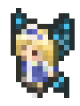

シルバーセカンド開発日誌
2023年07月
■
2023-07-23 (日) 第15回ウディコン、一般審査開始です！▼今回は当然ウディコンのお話！
夏休みの方もいらっしゃると思いますので
ぜひウディコン作品をお楽しみください！
【第15回ウディコン 審査開始！】
ということで第15回も予想以上の作品が集まりました！
最終エントリー【60】番までご応募され、いよいよ『一般審査』が開始です！
審査内容は途中保存も可能で、何回でも書き換えられるので、
もしご協力くださる方は、できる範囲でゆっくり入力していってください。
↓
【WOLF RPGエディターコンテスト公式ページ】
一般審査の締め切りは【8/16(水)の23：59】まで！
結果発表はなんとなく8/19（土）の夜あたりになると思います！
もしあなたが応援したくなったゲームがあれば、ぜひ審査をお願いします！
4作品以上を審査すると審査結果の集計にカウントされますが、
1作品だけの審査でもコメントが届きますので、
ただ作者さまに応援メッセージ送りたい人もよければぜひ！
今年のウディコン作品は、非常にわたくしごとながら、
最初の方からデッキ構築やローグライク（ローグライト）要素を持った作品が
複数来て個人的に大興奮でした。
それぞれジャンルは近くとも、ゲームデザインの差から来る感触の違いを
楽しめているのでとてもゲーム開発の勉強になっています。
もちろん他のジャンルも、ゲーム性が強めな作品も、
印象に残りそうな作品も多くて大喜びです！
皆さま本当にありがとうございます！
【シルバーセカンド作品もセール中！】
ウディコン作品が面白すぎるおかげで私のゲームや
コンテンツは見向きもされなくなりがち！
コンテンツ的に思いっきりバッティングしてしまうので
いつもよりすごい勢いで口座残高が減りがちな時期です。
今ならゲームは
「シルエットノート」\1500→ ￥750（-50％）
「シルフェイド学院物語」 \2000→￥1000（-50％）
「片道勇者プラス」 \500→￥250（-50％）
の3本分で合計￥4000→￥2000（-50％）！
また、Amazonで発売中の電子書籍は、
今回は「旅団世界TRPGリプレイ」シリーズ3冊セットが
￥2772→￥1350（-51％）となっております！
→ ◆全3巻リスト https://amzn.to/3kJmNkB
（Amazonページ）
3巻の人気投票は今年9月頃に集計して公開予定です！
好きなキャラがいる方はぜひ応援の一票を！
なお、旅団世界のリプレイは毎年発売してましたが3巻でいったんお休みです。
しばらくはゲーム開発の方に集中させていただきますが、
ふとTRPGを遊びたくなったときにまた細かく動画など上がるかもしれません！
ちなみにウディタ関連のご支援もいつでも受付中です！
すでにBOOSTまでしてくださった皆さま、本当にありがとうございます！
とても助けになっています！
→ 【ウディタご支援/投げ銭用
ミニ参考資料集ページ】
それでは第15回ウディコン、今年もお楽しみください！
自分も楽しませていただきます！ ■
2023-07-08 (土) 片道勇者2開発+7 ランダムイベント作成 +Twitter事件▼引き続き『片道勇者2』開発中です！
今週先週はTwitter周りでいろいろ事件が起きていたので、
その件についても言及しています。
↓ Twitterの閲覧制限がかかると次のAPIが配給されるまで
ツイートが読めない！(現在はある程度改善されているらしい？)
【片道勇者2 ランダムイベントを実装！】
今回はいろいろなランダムイベントを作成していました！
前作にあった分を再現するだけでも、作るために足りない機能が
いっぱいあってあわあわしていました。
『片道勇者2』では今のところ、ランダムイベントを
2系統用意することにしています。
1つは「ランダムで起きてその場で解決するもの」、
1つは「発生地点と解決地点が違い、無視することもできるもの」です。
【1.ランダムで起きてその場で解決するもの】
これらは、発生したらプレイヤーがその場で対応を迫られる
いつものランダムイベントです。
●仲間が出現 ！
すぐ近くに仲間になってくれるキャラが出現します！
仲間には、「癒し手ネムリ」などの立ち絵がある『英雄的仲間キャラ』と、
「荷運び馬」「傭兵」みたいな立ち絵のない『サブ的な仲間キャラ』の
2種類がいます。英雄的仲間の方は出現確率が低めです。
●近場にレアアイテムがドロップする！
いきなり近くにちょっとしたレアアイテムが落ちてきます。
運がよければ、地面には普通は落ちてない貴重なアイテムも降ってきます。
前作では「落ちているアイテムがしばらく増える」というイベントが
ありましたが、今作は質を高める方向での搭載にしてみています。
●女神によって「超元気」状態になる＆ST全快する！
これは前作にもありました。
STが回復し、一定ターンの間、攻撃力なども強化されます。
●キャラバンが現れる！
目の前に買い物ができるNPCが現れます。ちょっとうれしい。
●山賊が現れる！
「グヘヘ……」「女だぜ……」としゃべる
いつもの山賊の群れが現れて戦いになります。
前作もそうだったのですが、実は所持金が多いほど
山賊の出現数が増えます。
●魔物に囲まれる！
魔物がプレイヤーを囲むように出現します。
敵が近付いてくるまでちょっとだけ猶予があるので、
うまく工夫して戦うか、うまく逃げることが要求されます。
●闇の速度アップ！
強制スクロール速度が一時的にアップします。
速度アップの時間が終わると大きな経験値カードが手に入ります。
【2.ランダムで起きるが、『先の地点で』
解決するもの（無視もできる）】
こちらはさっきのケースよりは発生頻度が少ないものの、
1回に得られるものが大きいランダムイベントです。
無視することもできますが、条件を満たすことで
「英雄的仲間」や「貴重なアイテム」など良いものを得やすいのが特徴です。
●配給キャンプが遠くに出現！
「XXXkmで配給キャンプをX日まで開いています！」という手紙が届きます。
適度に急いで時間内にそこまで行けると、武器～消耗品の中で
好きな種類のアイテムを1つもらえたり、確実に買い物が出来たり、
そこそこの確率で英雄的仲間が登場したり（！）します。
手紙にはキャンプで登場する仲間キャラの名前も書いてあるので安心！
武器や食料、仲間が不足している場合は大きな救いになるでしょう。
もちろん、これらが必要なければ無視してゆっくり進んでもOK！
●襲われている街から手紙が！
「XXXkmにある街で襲われてます、X日目の終わりまでしか
耐えられそうにないです、助けて！」
と書かれた手紙を手に入れるところから始まるミッションです。
ゆっくり行っても構いませんが、その場合は着いても
「滅びた街」だけがあるという『シルフェイド幻想譚(時間制限付きRPG）』を
思い起こさせるイベントですね！
間に合えば現地で戦闘になり、群れを倒すと貴重品がもらえます。
ちなみに救援の手紙は、「癒し手ネムリ」などの英雄的仲間キャラが
出してくる場合があり、その場合は助けに行けばそのキャラが
良条件で仲間になってくれたり、仲間にしなくともキャラに応じた
貴重品がもらえる予定です。
●急な護衛ミッション！
色々あって急に「協力NPC（別のマスにいる仲間）」として
3人の子供が出現してついてくるので、一定距離先まで
護衛しなければならないミッションです。
難しいのでイベント発生率は最も低確率です。
1人以上生き残れば報酬がもらえます。
※3人の子供達がついてくる ↓

ところでこういうイベントを作ったときにちょっと気になる問題が！
「ドット絵キャラでも、少年・少女と書かれている存在が
ダメージを受けたり死んだりする（断末魔っぽいのを言う）シーンを入れちゃうと、
CEROが上がったり海外の何かの規制に引っかかったりしないかな？」
という懸念が頭に浮かぶのでしょうが、こういうところどうなんでしょうね。
前作でも「少女ミラ」がやられたりしてるので大丈夫？
今回は敵にやられたときの心の痛みを増す意図で子供3人に設定したんですが、
もしまずそうなら代わりに弱そうな「おじさん」が3人仲間になります！
「おじさんならやられてもいいっていうのかよー差別だー！！」
と私の中の正義マンが叫んでいますが、海外展開するなら
子供キャラの扱いにはちょっと気をつけたほうがいいのかなという気はしています。
【3.ランダムイベントってどういう意図で入れている？】
さて、こちらは前述の2種のランダムイベントの搭載意図についてのメモです！
＜前作分のランダムイベントの意図 『罠の代わりのリソース変動』＞
前作『片道勇者1』におけるランダムイベントは、
「不思議のダンジョン」シリーズの「罠」を入れない代わりに、
「罠」の搭載意図であろう「予想外のリソース変動を起こさせる」目的で
搭載されていました。
なぜ罠にしなかったかというと、「罠」の場合、
踏んだときのストレスが強かったり、罠を探知するプレイコストが
面白さに貢献しないパターンも結構あるからです。
それなら最初から回避不能なものとして用意すれば、
同じようなリソース変動効果をいくらか気持ちよく実現できるんじゃないか？
という意図で、代わりに「ランダムイベント」が搭載されたわけですね。
＜『先の地点』ランダムイベントの意図 『欲しいものを狙ってもらう』＞
で、今回新たに入れることになった
「ランダムで起きるが『先の地点で』
特定条件を満たせば良い結果になるイベント」！
こちらは、手に入る報酬を先に明らかにしてプレイヤーの方に
「狙うぞー！」みたいな気持ちを発生させたい、
という意図で搭載されています。
「引力」でプレイヤーの人を動かしたい、とも言い換えられますね。
たとえば数百km先に特定の仲間がいると分かり、
急げば合流できるなら、割と自然に急いで進みたくなる状況が作れそうです。
前の記事の追記部分でも言ってましたが、たまには
「急ぐことが最適解になる自然な状況」を作ってプレイの方針を変化させたい！
今作はこのような、『何かを狙って行動してもらう』要素を
もっとうまく取り入れていきたいなと考えています。
【やっと妖精クリスのドット絵が！】
←
ジャアアン！ アドバイザーである「妖精クリス」の
8方向ドット絵をようやく作れました！
これで万が一戦闘キャラとして参加するイベントがあっても安心！
ドット絵は上手じゃないなりに、サイズや動き感が
それっぽくなってればひとまずOK、くらいがとりあえずの目標です。
やっぱりうまくドット絵を描ける人はすごいと思います。
なおこれら以外のキャラチップに関しては、
ウディタ同梱の「グラフィック合成器」を大変便利に
活用させていただいております！
前作に引き続き、キャラチップ周りはうまいこと省力化して、
他の部分にエネルギーを注いで開発速度を早めたいと思います。
【6月末～7月始めにTwitterが大変に！】
ここからはサイト運営にもかかわるTwitterのお話です。
7月に入る直前あたりからTwitterが非ログイン状態だと読めなくなったり、
なんと閲覧回数に制限がかかったりして大騒ぎになっていました。
時系列としてはたぶんこんな感じだと思います。
◆6/30頃 非ログインだとTwitter見られなくなった！(今は1ツイートだけ読める)
◆7/1夜 閲覧制限が入って1日600～1000ツイートしか読めなくなった！
◆7/4 旧TweetDeck(便利な公式サービス)が使えなくなった！
またツイッターの「サイト埋め込み」も使えなくなり、
非ログイン状態で私のツイートを見る手段がほぼなくなる。
様々な理由によってSNSで閲覧制限しなければならないほどの状況とは
Twitter運営さんも大変すぎますが、私も無料であることに甘えて
かなり依存していたので、いろいろ対応が大変でした。
特にウディコンの「順位カウントダウン発表（10分で1位ずつ発表していく）」
などはTwitterがあってこそのアイデアでしたからね！
アカウントを持っていなくてカウントダウンを見られない人も多くなるでしょうし、
また閲覧制限がかかるとカウントダウン発表中の2時間にわたって
ツイートを追うのが困難になるかもしれません。
順位カウントダウン自体は楽しいイベントだと思うので、対策を今から検討中です。
この期間中にTwitterで私が話した情報を、こちらにもまとめておきます！
◆ウディコンでのAI生成コンテンツの利用についての告知
ウディタ製フリーゲームの夏のお祭り『ウディコン』における
AI生成コンテンツの利用について「応募・審査・規約」ページに追加しました。
→◆https://silversecond.com/WolfRPGEditor/Contest/txt.shtml
第15回ウディコンではまだAI生成コンテンツの制限はありませんが、
2024年の第16回以降、AI生成物の利用に関して制限を設ける可能性があります！
というお知らせです。
特に問題なのが「AI画像生成」で、日本の法律では現状問題ないっぽいとしても
権利関係が良くないのではないか、と言われることが多いため、
「適切な権利がある素材」で学習されたモデルやサービス以外は
【来年から】利用禁止にする可能性が出てきています。
（この制限が入った場合、『Adobe Firefly』や、「CC0や許諾あり画像のみで学習された権利的に安全なモデル」を
使うのはOKですが、Stable Diffusionの基本モデル含むほぼ全てのモデル、
NovelAI、Midjourney系その他のAI画像生成はほぼアウトになります）
とはいえ、現在は急激に「権利的にクリーンなAIモデル」の需要が高まっているので、
これからの1年でその分野も強化されそうな気がしています。
そうやって権利的に安全な状況ができて、
ようやくAI画像生成の本格的なスタート！ という感じになりそうですね。
とはいえ、クリエイター関連サイトだと
「低品質な作品が増えすぎることが問題なのでAIを排除したい」
という気持ちも3～5割くらいありそうな気がするので、
そういうところでは引き続きAIは使いにくいままかもしれません。
たとえばSteamさんの場合、生成AIの学習元が
権利的に怪しいのもありますが、AI画像を使った
低クオリティゲーム（簡単なパズルやノベルなど）が
大量に来ていたらしいという話もユーザからちょっと話題になっていました。
ウディコンでもそういった傾向が過剰になった場合は、
厳しい制約を設けるかもしれません。
たとえば普段は60～80作品なのに、250作品中200作品のAI作品が
来るようになったとかだとさすがに考えます。
◆ログインしなくても見られる他SNSでアカウント取りました
さて、こちらはTwitterが見られない場合の避難先SNSの情報です！
万が一のためにmisskey.ioにもアカウントを取ってありますので、
Twitterが見られない場合はこちらもどうぞ！
◆Misskeyにアカウントを作ってあります！
→ Misskey内 アカウント https://misskey.io/@WO_LF
Misskeyの内容はログインしていなくても見られますので、
「Twitter持ってないけどSmokingWOLFのつぶやきは見たい」
という場合もこちらをどうぞ。
Twitterが非ログインで見られないこの状況下では、
だいたいTwitterと似た感じのことを投稿しておこうと思います。
あと私はまだ仕組みを熟知できていませんが、
もしmisskey.io以外の分散型サーバにアカウントをお持ちでしたら、
「@WO_LF@misskey.io」と入れてユーザ検索すれば
別サーバからでもフォローが可能？ らしいという話を聞いています。
また、先日Meta社からThreads（スレッズ･SmokingWOLFアカウントへ）というサービスが
始まったので、企業公式さんなどが多用する感じであれば
そちらに告知用の拠点を作る可能性もあるかもしれません。
とはいえ、Threadsは今のところWeb版がないスマホ専用のサービスなので、
告知を入れるにしてもまだ少し作業コストが高そうです。今は様子見中です。
それから、7/16（日）からは第15回ウディコンも始まります！
たいていはデータ破損回避のため前日(7/15)の夜からこっそり作品受付開始しています。
今年も素敵なゲームをお待ちしております！ 2023年07月
Copyright © SmokingWOLF / Silver Second
 カテゴリ: ウディタ
カテゴリ: ウディタ カテゴリ: ウディタ
カテゴリ: ウディタ